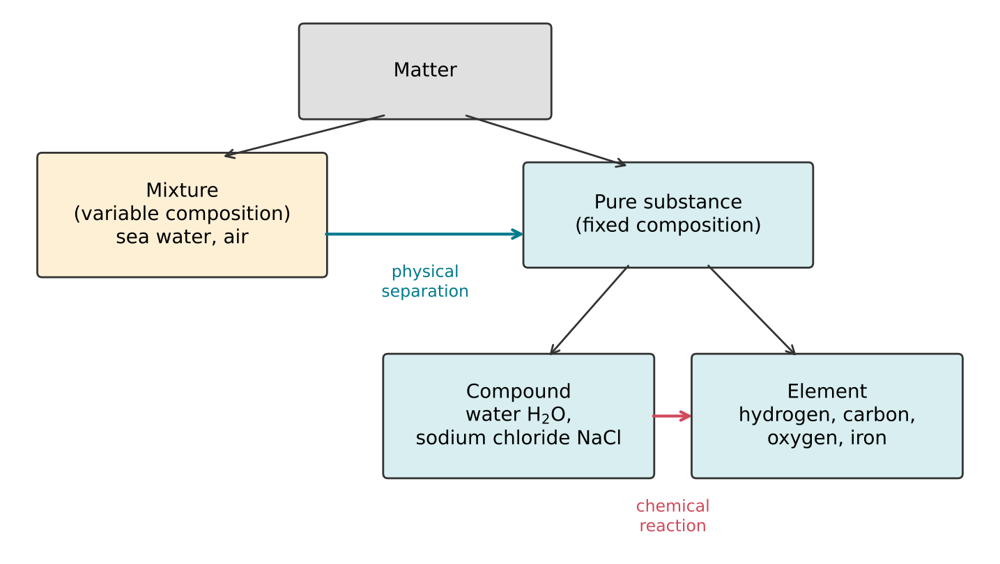
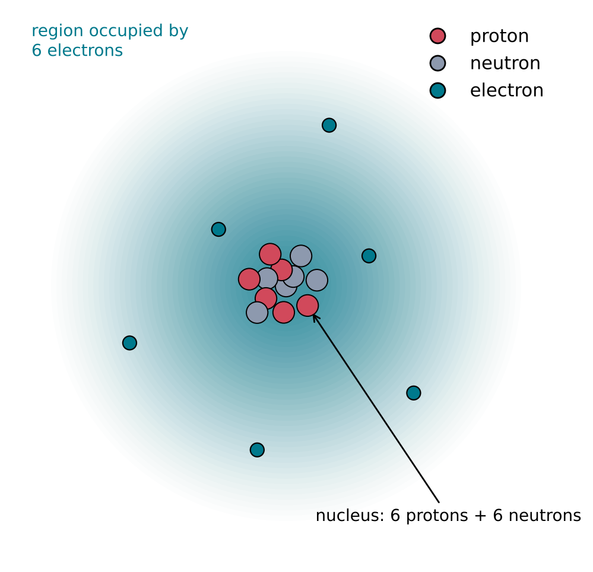
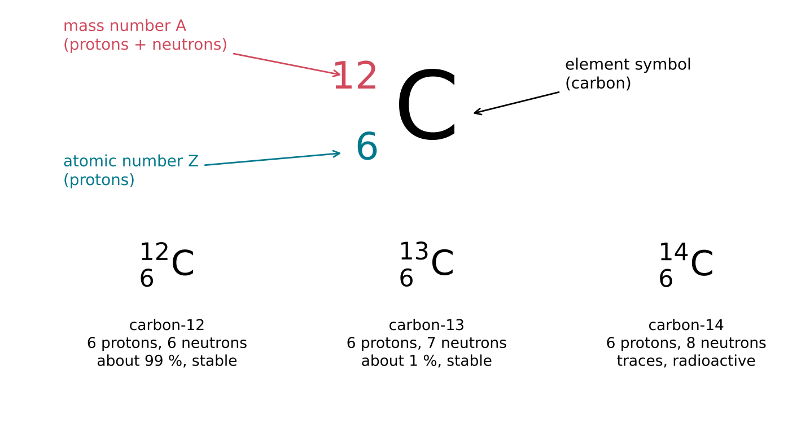
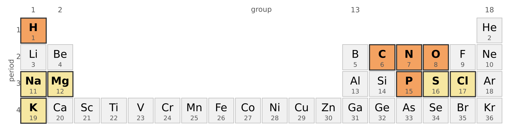

2 What Matter Is Made Of
The question of this chapter
Water, air, rock and living tissue look and behave nothing alike, yet all of them are built from the same small set of ingredients. This chapter asks: what are those ingredients, and how are they told apart? It distinguishes elements, compounds and mixtures, describes the three particles of which every atom is made, explains how isotopes and ions arise, and introduces the periodic table and the scale on which the masses of atoms are measured.
2.1 Substances and mixtures
Pure substances
A pure substance is a sample of matter with a fixed composition and fixed properties. Pure water, for example, always contains hydrogen and oxygen in the same proportion by mass, and at a pressure of one standard atmosphere it always freezes at 0 °C and boils close to 100 °C. A mixture contains two or more pure substances whose proportions can vary. Sea water, air and granite are mixtures: their compositions differ from place to place, and their components can be separated by physical means such as evaporation, distillation or sorting, without any chemical change.
Elements and compounds
Pure substances are of two kinds. An element is a pure substance that cannot be broken down into simpler substances by any chemical process. Hydrogen, carbon, oxygen, iron and gold are elements. A compound is a pure substance made of two or more elements combined in fixed proportions. Water is a compound of hydrogen and oxygen; table salt is a compound of sodium and chlorine. A compound can be broken down into its elements by chemical reactions, and its properties are usually quite different from those of the elements it contains: sodium is a soft, reactive metal and chlorine is a poisonous green gas, but sodium chloride is the salt sprinkled on food.
Figure 2.1 summarises these categories.

Atoms and molecules
Every element consists of tiny particles called atoms. An atom is the smallest unit of an element that retains its chemical identity. All atoms of one element behave chemically in the same way, and differ from the atoms of every other element.
In most compounds, atoms are held together in groups called molecules. A molecule is a group of two or more atoms bonded together, and it is the smallest unit of a compound that has the compound’s chemical identity. A molecule of water consists of two hydrogen atoms bonded to one oxygen atom. Some elements also exist as molecules: the oxygen in air consists of molecules containing two oxygen atoms each, and the nitrogen of air likewise of two-atom molecules. Not every compound is made of separate molecules; sodium chloride, for example, is a continuous arrangement of charged particles, described in Section 2.4.
Chemical formulas
A chemical formula states which elements a substance contains, using one- or two-letter element symbols, and how many atoms of each are present, using subscript numbers. The formula of water is H2O: two hydrogen atoms (H) and one oxygen atom (O); a subscript of 1 is not written. Oxygen gas is O2, carbon dioxide is CO2, and methane, the main component of natural gas, is CH4. Some symbols come from Latin names: sodium is Na (natrium) and potassium is K (kalium). A formula of this kind gives the composition of a molecule but not the arrangement of its atoms; Chapter 4 describes how that arrangement is drawn.
Solid, liquid and gas
The same substance can exist as a solid, a liquid or a gas, depending on temperature and pressure. These are the three common states of matter, and they differ in how the particles are arranged and how freely they move.
- In a solid, the particles are packed closely and held in fixed positions, about which they vibrate. A solid keeps its own shape.
- In a liquid, the particles are still close together but can move past one another. A liquid takes the shape of its container but keeps its volume.
- In a gas, the particles are far apart compared with their own size and move freely in all directions. A gas fills any container it is placed in.
A change from one state to another, such as melting or boiling, does not change the molecules themselves: ice, liquid water and steam all consist of H2O molecules. What changes is the strength of the attraction between molecules compared with the energy of their motion. These attractions between molecules are the subject of Chapter 5.
2.2 Inside the atom
Three particles
An atom consists of a small, dense, positively charged nucleus surrounded by a much larger region occupied by electrons (Figure 2.2). The nucleus contains two kinds of particle: protons, which carry a positive electric charge, and neutrons, which carry no charge. Protons and neutrons are known together as nucleons.
Electric charge is measured in coulombs (C). The charge of a proton is +e and that of an electron is −e, where e, the elementary charge, is exactly 1.602 176 634 × 10−19 C (National Institute of Standards and Technology, n.d.). No smaller charge has ever been observed on a free particle, so the charge of any atom or molecule is a whole-number multiple of e.
Table 2.1 compares the three particles. The proton and the neutron have almost the same mass, while the electron is about 1836 times lighter than a proton (National Institute of Standards and Technology, n.d.). As a result, more than 99.9 % of the mass of an atom resides in its nucleus.
| Particle | Location | Charge | Mass (kg) | Mass relative to the proton |
|---|---|---|---|---|
| Proton | nucleus | +e | 1.6726 × 10−27 | 1 |
| Neutron | nucleus | 0 | 1.6749 × 10−27 | 1.0014 |
| Electron | outside the nucleus | −e | 9.1094 × 10−31 | 1/1836 |

Mostly empty space
The nucleus is tiny compared with the atom. An atom has a radius of 1 to 2 × 10−10 m, whereas a nucleus ranges from about 4 × 10−15 m across for carbon to about 15 × 10−15 m for lead (Encyclopaedia Britannica, n.d.). The atom is therefore tens of thousands of times wider than its nucleus. If the nucleus of a carbon atom were enlarged to the size of a pea, about 5 mm across, the atom would be several hundred metres across, while still containing almost all of its mass in the pea.
The electrons do not circle the nucleus along fixed paths like planets. Quantum mechanics, the physical theory of matter on the atomic scale, describes each electron by the probability of finding it at each point around the nucleus. The arrangement of these electrons, described in Chapter 3, determines how an atom bonds to other atoms. Chemical reactions rearrange electrons; they never change the nucleus.
Neutral atoms
An atom contains equal numbers of protons and electrons, so its positive and negative charges cancel and it is electrically neutral. Atoms can, however, gain or lose electrons, and the particles that result are the subject of Section 2.4.
2.3 Atomic number, mass number and isotopes
Atomic number defines the element
The number of protons in the nucleus of an atom is its atomic number, symbol Z. The atomic number alone determines the element: every atom with one proton is hydrogen, every atom with six is carbon, every atom with eight is oxygen. The definition of an element given in Section 2.1 can therefore be made precise: an element is a substance whose atoms all have the same atomic number. At present 118 elements have been identified and named (International Union of Pure and Applied Chemistry, n.d.).
Mass number
The total number of protons and neutrons in a nucleus is its mass number, symbol A:
\[ A = Z + N \]
where N is the number of neutrons. Because protons and neutrons have nearly the same mass and electrons are so light, the mass number is close to the mass of the atom measured in the unit introduced in Section 2.6.
Isotopes
Atoms of the same element always have the same number of protons, but they can have different numbers of neutrons. Atoms that have the same atomic number but different mass numbers are called isotopes of the element. Isotopes of an element have almost identical chemical behaviour, because chemistry depends on the electrons, and the number of electrons in a neutral atom equals the number of protons.
An isotope is written with its mass number as a superscript before the symbol of the element, and sometimes with its atomic number as a subscript below it (Figure 2.3). In words, it is written as the name of the element followed by the mass number: carbon-12, carbon-13.

Hydrogen and carbon provide the two examples that matter most in this book.
- Ordinary hydrogen, 1H, has a nucleus consisting of a single proton. Deuterium, 2H, has one proton and one neutron; in the international reference standard for ocean water it accounts for 0.0156 % of hydrogen atoms (IUPAC Commission on Isotopic Abundances and Atomic Weights, n.d.-b). Tritium, 3H, has one proton and two neutrons; it is radioactive, with a half-life of 12.3 years (IUPAC Commission on Isotopic Abundances and Atomic Weights, n.d.-b), and occurs only in traces.
- Carbon-12 (six protons, six neutrons) makes up about 99 % of natural carbon (98.84 to 99.04 %, depending on the source), and carbon-13 (six protons, seven neutrons) about 1 % (IUPAC Commission on Isotopic Abundances and Atomic Weights, n.d.-a). Carbon-14 (six protons, eight neutrons) is radioactive and occurs only in traces.
Stable and radioactive nuclei
Not every combination of protons and neutrons is stable. Protons repel one another electrically; they are held together, with the neutrons, by the strong nuclear force, which is much stronger than the electrical repulsion but acts only over distances about the size of a nucleus. A nucleus with too many or too few neutrons for its number of protons is unstable, and sooner or later transforms into a different nucleus, emitting radiation. This is the radioactive decay described in Chapter 1, and the half-lives of such nuclei range from fractions of a second to billions of years. Because decay proceeds at a fixed rate whatever the chemical surroundings, radioactive isotopes serve as clocks: the ages of rocks, and of the Earth itself, are measured from the amounts of radioactive isotopes and their decay products that they contain.
2.4 Ions
Gaining and losing electrons
An atom or group of atoms that has gained or lost electrons carries a net electric charge and is called an ion. Losing electrons leaves more protons than electrons, so the ion is positive; such an ion is called a cation. Gaining electrons gives a negative ion, called an anion. The charge is written as a superscript after the formula, as a multiple of e: a sodium atom that has lost one electron is the cation Na+, a magnesium atom that has lost two is Mg2+, and a chlorine atom that has gained one is the anion Cl−.
Only electrons are gained or lost when ions form. The nucleus is unchanged, so an ion of sodium is still sodium, with atomic number 11.
Ionic compounds
Positive and negative ions attract each other strongly. In solid sodium chloride, each Na+ ion is surrounded by six Cl− ions and each Cl− by six Na+, in a regular three-dimensional arrangement called a crystal lattice. A compound held together in this way is an ionic compound. It contains no separate molecules, and its formula, NaCl, gives only the ratio of the ions, which must balance so that the compound as a whole is neutral. Magnesium chloride, for example, has the formula MgCl2, because each Mg2+ ion needs two Cl− ions to balance its charge.
Ions made of several atoms
Some ions consist of several atoms bonded together and carrying a net charge as a whole. Such ions are called polyatomic ions. Three are important in the chemistry of life:
- the hydroxide ion, OH−;
- the ammonium ion, NH4+;
- the phosphate ion, PO43−, a phosphorus atom surrounded by four oxygen atoms and carrying three negative charges.
Phosphate is a central component of RNA and DNA. Its negative charges, carried by every unit of these molecules, make them strongly charged in water, a property that governs how they dissolve, fold and interact with positive ions such as Mg2+.
2.5 The periodic table
Arranging the elements
The periodic table arranges the elements in order of increasing atomic number, in rows of different lengths, so that elements with similar chemical behaviour fall in the same column (Figure 2.4). A row is called a period, and a column a group. The groups are numbered from 1 to 18 from left to right. The regularity that the table displays was discovered in the nineteenth century from the chemical behaviour of the elements, before anything was known about the structure of atoms; its explanation in terms of electrons is given in Chapter 3.

Metals and non-metals
Most of the elements are metals: they conduct electricity and heat, have a characteristic lustre, and in compounds tend to lose electrons and form cations. Sodium, magnesium and iron are metals. The non-metals, grouped at the upper right of the table together with hydrogen, include hydrogen, carbon, nitrogen, oxygen, phosphorus, sulfur and chlorine. Non-metals tend to gain electrons or, more often, to share them with other atoms, as described in Chapter 3. The elements in group 18, helium, neon, argon and their heavier relatives, are the noble gases; they hardly react at all.
The elements of life
Living matter is built mainly from a few light non-metals. Every molecule of RNA is made of only five elements: hydrogen, carbon, nitrogen, oxygen and phosphorus. Proteins contain the same elements apart from phosphorus, together with sulfur. For the bacterium Escherichia coli, a standard laboratory organism, the dry mass (the mass remaining after all water has been removed) is about 47 % carbon (Heldal et al. 1985), 20 % oxygen, 14 % nitrogen, 8 % hydrogen and 3 % phosphorus (Neidhardt et al., n.d.). A small number of metal ions, such as sodium, potassium and magnesium, are present in smaller amounts but are essential.
Where the elements came from
Elements can be made only by nuclear reactions, which change the number of protons in a nucleus; ordinary chemistry cannot do this. Hydrogen and most of the helium in the Universe were formed in the first minutes after the Big Bang. Carbon, nitrogen, oxygen, phosphorus and the heavier elements were formed later, inside stars, and were returned to space when those stars shed their outer layers or exploded. The carbon in every living cell was therefore made in stars that lived and died before the Sun and the Earth formed.
2.6 Weighing atoms
The atomic mass unit
The masses of atoms are far too small to be expressed conveniently in kilograms. Instead they are measured in the dalton (Da), also called the unified atomic mass unit (u). It is defined as one-twelfth of the mass of a single atom of carbon-12, and equals 1.660 539 068 92 × 10−27 kg (National Institute of Standards and Technology, n.d.). On this scale an atom of carbon-12 has a mass of exactly 12 Da, and the mass of any atom in daltons is close to its mass number. A proton has a mass of 1.007 28 Da and a neutron 1.008 66 Da (National Institute of Standards and Technology, n.d.).
Standard atomic weights
Most elements occur in nature as a mixture of isotopes. The average mass of the atoms of an element in a natural sample, expressed relative to one-twelfth of the mass of a carbon-12 atom, is its atomic weight, also called its relative atomic mass. Because it is a ratio of two masses, it has no unit. The atomic weight of carbon is 12.011, slightly more than 12, because natural carbon contains about 1 % of carbon-13. The atomic weights of the elements are evaluated by the Commission on Isotopic Abundances and Atomic Weights of IUPAC, the International Union of Pure and Applied Chemistry; Table 2.2 lists the values for the elements used most in this book.
| Element | Symbol | Z | Atomic weight |
|---|---|---|---|
| Hydrogen | H | 1 | 1.0080 |
| Carbon | C | 6 | 12.011 |
| Nitrogen | N | 7 | 14.007 |
| Oxygen | O | 8 | 15.999 |
| Sodium | Na | 11 | 22.990 |
| Magnesium | Mg | 12 | 24.305 |
| Phosphorus | P | 15 | 30.974 |
| Sulfur | S | 16 | 32.06 |
| Chlorine | Cl | 17 | 35.45 |
| Potassium | K | 19 | 39.098 |
Molecular mass
The mass of a molecule is the sum of the masses of its atoms. Using atomic weights, the relative molecular mass of water, H2O, is
\[ 2 \times 1.0080 + 15.999 = 18.015 \]
so a water molecule has an average mass of 18.015 Da. In the same way, carbon dioxide, CO2, has a relative molecular mass of 12.011 + 2 × 15.999 = 44.009. These numbers are the starting point for counting molecules in a sample, which is the subject of Chapter 6.
Key points
- A pure substance has a fixed composition; a mixture does not. Elements cannot be broken down chemically; compounds are made of elements in fixed proportions.
- An atom is the smallest unit of an element; a molecule is a group of bonded atoms, the smallest unit of a molecular compound. A chemical formula such as H2O gives the number of atoms of each element.
- Solid, liquid and gas differ in how closely and how freely the particles move, not in the particles themselves.
- An atom has a nucleus of protons (+e) and neutrons (no charge), surrounded by electrons (−e). The electron is about 1836 times lighter than a proton; almost all the mass of an atom is in its tiny nucleus.
- The atomic number Z (number of protons) defines the element. The mass number A is the number of protons plus neutrons. Isotopes have the same Z but different A, and almost the same chemistry.
- Ions are atoms or groups of atoms that have lost electrons (cations) or gained them (anions). Phosphate, PO43−, is a polyatomic anion found in RNA and DNA.
- The periodic table orders the elements by atomic number, in periods (rows) and groups (columns) of similar behaviour. The elements of life are mainly light non-metals: H, C, N, O, P and S.
- Atomic masses are measured in daltons (1/12 of the mass of a carbon-12 atom). The atomic weight is the average for the natural isotope mixture; molecular masses are sums of atomic weights.
Self-test
- Classify each of the following as an element, a compound or a mixture: oxygen gas, sea water, carbon dioxide, gold, air.
- How many protons, neutrons and electrons are there in a neutral atom of oxygen-18 (Z = 8)? How many in the ion 16O2−?
- Nitrogen has two stable isotopes, nitrogen-14 and nitrogen-15. What do they have in common, and how do they differ?
- Write the formula of the ionic compound formed by Mg2+ and Cl−, and of the compound formed by Na+ and PO43−.
- Using Table 2.2, calculate the relative molecular masses of methane (CH4) and of ammonia (NH3).